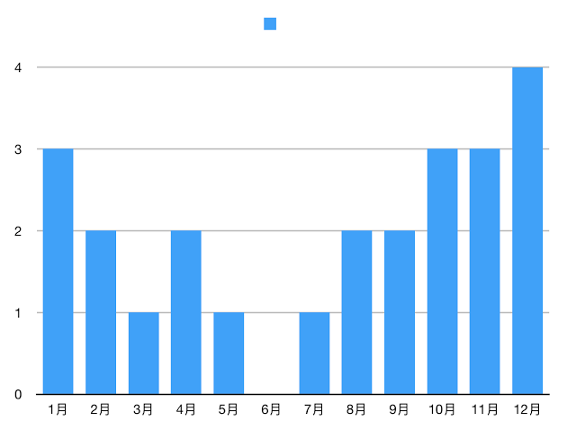

2017观影记录 ¶
| Publish Date: | 2017-12-30 |
|---|
2017年马上就结束了。掐指一算，2017年看了好多电影。包括线上和线下电影院的。
线下电影院观影记录（按时间顺序，以中国大陆上映时的片名为准）：
- 星球大战外传：侠盗一号 （Rogue One: A Star Wars Story）
- 太空旅客 （Passengers）
- 降临 （Arrival）
- 极限特工：终极回归 （xXx: The Return of Xander Cage）
- 生化危机6：终章 （Resident Evil: The Final Chapter）
- 金刚狼3：殊死一战 （Logan）
- 攻壳机动队 （Ghost in the Shell）
- 速度与激情8 （The Fate of the Furious）
- 拆弹专家
- 大护法
- 战狼2
- 星际特工：千星之城 （Valérian et la Cité des mille planètes）
- 看不见的客人 （Contratiempo）
- 英伦对决 （The Foreigner）
- 天才枪手 （ฉลาดเกมส์โกง）
- 王牌特工2：黄金圈 （Kingsman: The Golden Circle）
- 全球风暴 （Geostorm）
- 东方快车谋杀案 （Murder on the Orient Express）
- 雷神3：诸神黄昏 （Thor: Ragnarok）
- 追捕
- 至暗时刻 （Darkest Hour）
- 寻梦环游记 （Coco）
- 至爱梵高·星空之谜 （Loving Vincent）
- 芳华
线上观影记录（包括BT下载以及Netflix，包括电影/纪录片/部分美剧，不完全）：
- Blade Runner (1982)
- Blade Runner 2049
- Love Actually
- World War Z
- Dunkirk
- Everst
- 霸王别姬
- Titanic
- 隧道 （터널）
- London Has Fallen
- 出租车司机 （택시운전사）
- Ocean’s Eleven
- Ocean’s Twelve
- Shooter
- Knight Day
- 2001: A Space Odyssey
- Minority Report
- Deep Impact
- Area 51
- San Andreas
- I, Origin
- Particle Fever
- City 40
- Stranger Things
- House Of Cards , Season 1
现在回忆一下，很多电影的质量其实很一般，属于看完之后走出电影院差不多就能忘记剧情的那种。这种电影很多都是所谓的「商业大片」，追求特效和画面，完全不考虑剧情的质量和观众的观影感受。
简单分析了一下，线下观影的统计
6月居然一部都没看，是因为工作太饱和了还是因为没有好看的电影呢？